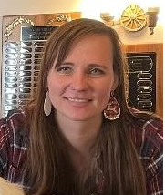
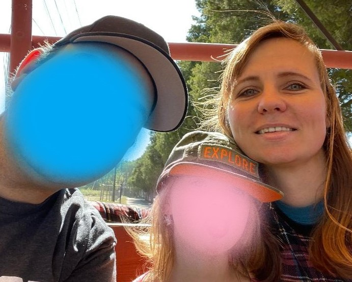

 My name is Manja Wilson. I'm 33 and I've been a stay-at-home mom for the last 7 years.
I was born and raised in Germany, where I graduated from High School in 2008, and then came to the US to be an Au Pair.
My time as an Au Pair wasn't always easy, but it prepared me in a lot of ways for being a mom myself.
It also gave me the opportunity to travel a little within the US.
Between 2009 and 2010 I visited the Poconos (PA), Atlanta, Virginia, San Francisco, Miami, Myrtle Beach, and Hawaii.
While I was still an Au Pair, I met my husband, Joe, and after my Au Pair time was over, I stayed with him and
we got married in 2011.
Over the years I worked in different retail jobs and eventually as a bank teller.

My immediate family consists of myself, my husband, Joe, our daughter, Amy, and our dog, Lucy.
This is Lucy
Most of Joe's family live fairly close to us, but all of my family still lives in Germany.
I have an older brother and sister, a niece and nephew and my mom over there.
It's pretty hard and expensive to fly to Germany more than every few years or so,
so unfortunately I don't see my family often.
But Joe's family is so great and they are there for us whenever we need anything.
During my time as a stay-at-home mom I tought myself a few new skills. With the help of
YouTube I learned how to knit, crochet, and make my own soaps.
I love being crafty and creating or designing things.
I also love to read, watch TV / Movies, and being outdoors when the weather is nice.
I take lots of walks with my daughter when it's nice out, and in the summer we love to go to the beach.
I have absolutely no experience with coding. I consider myself to posess about average computer skills:
*Please be aware that at the time this website was created, my bootcamp hadn't started yet.